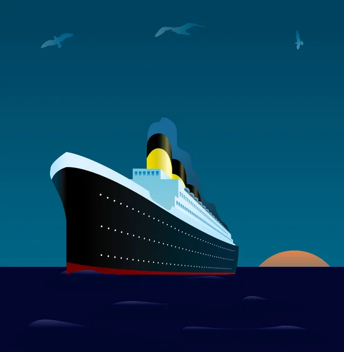

Étude du taux de survie du Titanic
Thème : Création et gestion d’une base de donnée
Language : PostgreSQL
Date : 2022
Dans ce projet, il fallait recueillir des données sur le naufrage du Titanic afin de créer une base de données regroupant toutes les informations. À l'aide de cette base de données, nous devions effectuer une étude sur le taux de survie en utilisant différents critères tels que l'âge et le sexe.
D'abord, nous avons recueilli les informations relatives au naufrage en utilisant des sites internet et des bases de données disponibles en ligne. Ensuite, nous les avons nettoyées pour garder que les informations utiles à notre étude puis regroupées dans des bases de données SQL. Enfin, nous avons étudié ces bases de données en utilisant des requêtes SQL.